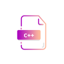

|
 |  |
 |
|
HTML5Ucim se psat webove stranky jako je tato. |
C++Umim psat stredne slozite konzolove aplikace a jednodussi aplikace v okne pomoci knihovny Qt. |
JavaV jave jsem se kdysi ucil zaklady a po zmaknuti html na ni budu prechazet. |
PythonS Pythonem jsem drive pracoval a naucil jsem se v nem delat zakladni prikazy ale nikdy jsem mu kompletne nepronikl pod kapotu. |